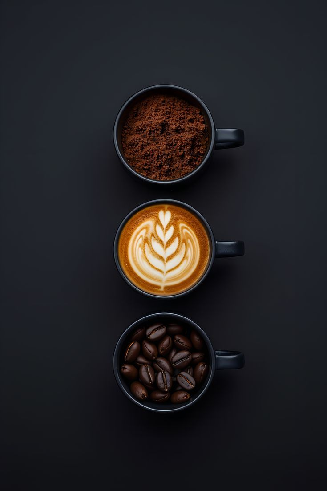

Cerita Usaha
Tentang Senja Dua Roda
Senja Dua Roda adalah ruang bagi pecinta kopi di Pekalongan untuk menikmati hasil bumi nusantara. Kami percaya bahwa secangkir kopi mampu menghangatkan suasana dan memulai diskusi yang bermakna.

Cerita Usaha
Senja Dua Roda adalah ruang bagi pecinta kopi di Pekalongan untuk menikmati hasil bumi nusantara. Kami percaya bahwa secangkir kopi mampu menghangatkan suasana dan memulai diskusi yang bermakna.
